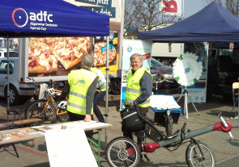

Sprecher Jens Spille, E-Mail:

Die ca. 50 Km lange Stecke führt uns über Arnum durch das Bürgerholz zum Radlerfrühstück gg. 10.30 Uhr nach Devese zu Mutter Buermann.
Gestärkt geht es weiter über Ihme-Roloven nach Holtensen. Dort durchqueren wir einen Naturerlebnispfad und fahren aufwärts zu den Windrädern bei Lüdersen hoch. Hier haben wir einen herrlichen Ausblick über das Calenberger Land bis nach Hannover. Weiter geht es über Gestorf nach Thiedenwiese und Jeinsen. Dort fahren wir über die Leinebrücke durch die herrliche Seenlandschaft nach Ruthe. Wir machen einen Abstecher zum Zusammenfluß der Innerste/Leine zu einem schönen Rastplatz. Am Versuchsgut vorbei geht es weiter nach Koldingen, und durch das Fuchsbachtal zurück nach Pattensen, wo wir um 16.00 Uhr auf dem Erlebnistag am Calenberg-Center eintreffen werden.

Am 12. Juni 2016 veranstaltet der ADFC Region Hannover in Kooperation mit der AOK Hannover, der Region Hannover und der Hannoverschen Allgemeinen Zeitung eine ganztätige Radtour in und um Hannover. Der RAD-WANDER-TAG ist eingebunden in den Wettbewerb â€Stadtradeln“, der vom 29. Mai - 18. Juni 2015 stattfindet und in das Programm der Gartenregion Hannover, die in diesem Jahr unter dem Motto â€Neue Gartenhorizonte“ steht. Auf der Strecke werden 6 Infopunkte in jeweils ca. 7 km Abstand eingerichtet – diese Entfernung ist auch von Kindern gut zu schaffen.
Stadt Pattensen und das Wanderbare Calenberger Land
Stadt Hemmingen und das Radvehrkehrskonzept
Letzte Änderungen und Ergänzungen
Spontane Feierabendradtouren werden bei entsprechenden Wetter angeboten. Die ADFC Ortsgruppe hat dafür eine E-Mail Liste angelegt. Wir melden uns wenn es passt. Wer auf dieser Liste möchte, schreibe bitte an .
Folgende größere Radtouren im Raum Pattensen sind geplant:
Die ca. 50 Km lange Stecke führt uns über Arnum durch das Bürgerholz, nach Ihme-Roloven. In Holtensen durchqueren wir einen Naturerlebnispfad und fahren aufwärts zu den Windrädern hoch. Hier haben wir einen herrlichen Ausblick über das Calenberger Land bis nach Hannover. Weiter geht es über Gestorf nach Thiedenwiese und Jeinsen. Dort fahren wir über die Leinebrücke durch die herrliche Seenlandschaft nach Ruthe. Wir machen einen Abstecher zum Zusammenfluß der Innerste/Leine zu einem schönen Rastplatz. Am Versuchsgut vorbei geht es weiter nach Koldingen, und durch das Fuchsbachtal zurück nach Pattensen. Dauer ca.5-6 Std., Verpflegung bitte mitnehmen!
Die ca. 60 Km lange Strecke führt uns über Jeinsen und Schulenburg nach Nordstemmen. Dann geht es über Mahlerten nach Haus Escherde. Von dort aus fahren/schieben wir den Berg hinauf zum Kammweg des Hildesheimer Waldes. Oben angekommen genießen wir die kilometerlange Abfahrt nach Sorsum. Wir fahren an den Blaupunkt Werken vorbei zum Kloster Marienrode, weiter nach Ochtersum. Wir treffen dann auf den Fluß Innerste, dessen Verlauf wir durch Hildesheim bis in Höhe der Giesener Berge folgen. Dann fahren wir über Giften durch die Seenplatte nach Jeinsen zurück. Auf dem Feldweg geht es an den Windrädern vorbei, nach Pattensen. Es ist eine landschaftlich sehr abwechselungreiche Tour! Einkehr in einem schönen Cafe am Fluß ist möglich! Dauer ca.6-7 Std., ausreichende Verpflegung bitte mitnehmen!
Die ca.45 Km lange Stecke verläuft zuerst über die Calenberger Ackerwege in Richtung Bennigsen und Gestorf. Dann geht es durch das Hallerburger Holz nach Hallerburg. Über Sonnenborn fahren wir weiter nach Eldagsen-Hallermühle und Mittelrode, wo es ein idyllisches Hofcafe gibt, weiter zum sehenswerten Rittergut Bockenrode. Vor Bennigsen biegen wir nach Lüdersen ab und kehren zum Ausgangspunkt nach Pattensen zurück. Dauer ca.4-5 Std., Verpflegung bitte mitnehmen!
Die Leine Nachrichten berichteten am 15.03.2016 dass zwischen Westerfeld und Arnum an der B3 zwei Solarlaternen montiert werden sollen. Dann wünschen wir uns, dass tagsüber die Sonne scheint.
Die Leine Nachrichten berichteten am 12.03.2016 dass die Fahrbahn und Radwege der L 389 eine neue Decke bekommen. Die Abschnitte die durch Hiddestorf, Ohlendorf, Arnum und Wilkenburg verlaufenden, werden 2017 saniert. Jetzt hoffen wir alle, dass die Sanierung des besonders notwendige Abschnitts zwischen Wilkenburg und Wülfel auch wirklich erfolgt und die Baumwurzeln sich in Zukunft etwas Zurückhalten.
Das Bürgerbüro Stadtentwicklung Hannover bietet StadtRadTouren an. Aktuelle Veranstaltungen sind unter folgendem Link zu finden. Einen PDF Flyer zum Ausdrucken gibt es auch.
Frankreichs Straßen sollen Solarstrom produzieren und Frankreich will in den kommenden fünf Jahren rund 1.000 Kilometer Straße mit Solarzellen ausgelegen. WATTWAY heißt der Straßenbelag, den ein französische Bauunternehmen zusammen mit dem nationalen französischen Institut national de l’énergie solaire entwickelt hat.
Verkehrsregeln für Fahrradfahrer in verschiedenen Sprachen gibt es beim Bistum in Trier zum Download. Die Daten sind zum Weiterleiten, Ausdrucken, Verteilen …
Pattensen: Grüne fordern weitere Radwege zur KGS so lautet die Überschrift im LeineBlitz. Insbesondere geht es um die Entlastung des Schäferkamps. Dieser Weg ist viel zu schmal für Radfahrer.

GPSies bietet die Möglichkeit Touren zu planen und mit anderen auszutauschen. Auch als Apps erhältlich.
Tipp Radtouren: Ausgewählte Radtouren der Nachbar Ortsgruppen sind unter ADFC Region Hannover Termine zu finden.
Tipp Radfahrkarte: Eine Quellen offene Radfahrkarte mit Routingfunktion git es under OpenRouteService.org. Mit der rechten Maustaste kann man Start- und Zielpunkt setzen.
Ältere Tipps und Nachrichten gibt es unter Ältere Nachrichten
Am Do. den 12. Mai gab es einen Stand auf dem Hemminger Wochenmarkt um das Stadtradeln bekannt zu machen. Organisiert wurde der Stand von der Stadt Hemmingen, der Region Hannover und dem ADFC. Anmelden kann sich jeder unter Stadtradeln.de. Die Stadt Hemmingen ist das erste Mal dabei. Jeder Bürger, Vereine, Schulklassen und Firmen können sich beteiligen und die gefahrenen Fahrradkilometer im Zeitraum vom 29. Mai bis 18. Juni einbringen. Als Stadtradel-Star wird Alexandra Jaeger in den drei Wochen ihr Auto gegen Hannah, das Lastenrad-Pedelec des ADFC tauschen.
Die 13. Feierabend-Radtour ging am Mittwoch den 11. Mai mit vier Radlern (3 Herren und eine Dame) bei herrlichem Sonnenschein zur Anderter Schleuse. Wir sind in knapp 3 Stunden gemütlich an den Hemminger Teichen vorbei zum Maschsee, dann durch die Eilenriede Richtung Bischofshol, den Herrmann-Löns-Park, bis zum Mittellandkanal gefahren. An der Anderter Schleuse haben wir eine kurze Rast eingelegt und konnten die Schleuse in Betrieb sehen. Der Rückweg ging dann über den Kronsberg mit schöner Aussicht über Hannover, am Expo-Gelände vorbei, durch Laatzen und die Leinemasch. Nach gut 32 km und einer abwechslungsreichen, kurzweiligen Fahrt waren wir pünktlich zum Sonnenuntergang zurück in Hemmingen.
Am 24. April 2016 ist eine Gruppe von Radlern zum Kaliberg Giesen gefahren. Gegen 14:15 hörte der Schneeregen auf und die Sonne kam durch. Die Radler waren, entsprechend der Witterung, gekleidet, und haben einstimmig beschlossen die Tour zu fahren. Über die Calenberger Ackerwege und Schliekum, fuhren sie durch die schöne frühlingshafte Seenlandschaft bei Giften. Weiter ging es über Feldwege in Richtung des schon sichtbaren Kalibergs. Nach dem Studium der Schautafeln über das ehemalige Kalibergwerk und eine Umrundung des Kalibergs ging es weiter über die Innerste, den romantischen Innerste-Heide-Radweg entlang, an Technikdenkmälern vorbei bis nach Sarstedt hinein! Anschließend ging es am landwirtschaftlichen Lehrgut vorbei nach Koldingen. Zwischendurch gab es viele kleine und große Pausen mit Besichtigungen. Alle waren bester Laune und alle waren sehr zufrieden mit der 38 km langen Tour!
Mehr zu der Tour

Die erste 🚲 Frühlingsauftagtradtour am Donnerstag den 14.April hat mit fünf Radlern (4 Herren und eine Dame) über den Lindenerberg geführt. Wir sind in gut 2 Stunden gemütlich über die Kückmühle, an Mühlenberg vorbei durch die blühenden Schrebergärten in Bornum auf den Lindenerberg gefahren. Nach einer kurzen Pause im Garten auf dem Friedhof, mit einem kleinem Rest von Scilla-Blüten ging es im Zickzack durch Linden. An der Bettfedernfabrik vorbei, an der Ihme und durch die Leinemarsch zurück zum Rathausplatz. Nach gut 24 km und netten Gesprächen im herrlichen Sonnenschein eine schöne Feierabend-Radtour.

Am Montag, den 11. April wurde in Hemmingen der Koordinierungskreis des ‘Hemminger Netzwerk für Flüchtlinge’ gegründet. Mitglieder sind Vertreter der Arbeitsgruppen wie. z.B. die Deutschgruppen, das interkulturelle Kreativ-Kaffee, Patenschaften und die ADFC Ortsgruppe Hemmingen/Pattensen 🔧.
Am verkaufsoffenen Sonntag, den 10. April 2016 am Rewe-Center, hatte der ADFC einen Infostand aufgebaut. . Links und rechts neben dem ADFC-Stand gab es Informationen vom Wegeteam, Netzwerk für Flüchtlinge und zum Thema Stadtradeln 🚲.
Auf dem ADFC-Stand gab es Informationen rund um das Lastenrad “Hannahâ€, die geplanten Radtouren und einen Stadtplan auf dem Besucher mithilfe von Klebepunkten positive und auch kritische Radwegeführungen in Pattensen markieren konnten. 
Der 12. RadlerTreff fand am 6. April um 19:00 in den Räumlichkeiten Villa MitMensch des Bundesverband Selbsthilfe Körperbehinderter e.V. in Pattensen statt. Besprochen wurden Aktionen zum fairen Umgang aller Verkehrsteilnehmer im Straßenverkehr. Das geplante Fahrradkompetenztraining “Train the Trainer†in Zusammenarbeit mit den Flüchtlingsnetzwerkern aus Pattensen. Veranstaltungen zum Stadtradeln 2016, das dieses Jahr vom 29. Mai bis 18. Juni stattfindet. Der ADFC wird eine gemeinsame Tour zur Auftaktveranstalltung “Fahrradsternfahrt†am 29.05.2016 (über die Schnellwege) von Pattensen, über Harkenbleck, Wilkenburg und Hemmingen Dorf anbieten. Weiterhin wurde die Organisation des ADFC-Infostandes am verkaufsoffenen Sonntag, den 10. April am Rewe Center besprochen. Weitere Themen waren die geplanten Touren, der Schulwegplan Pattensen und vieles mehr.
Am Mittwoch den 24. Februar 2016, um 19:00 im Bürgersaal Hemmingen, fand die erste Jahreshauptversammlung nach der Gründung der Ortsgruppe am 19. Mai 2015 statt.
Anwesend waren 13 Personen, davon 7 Wahlberechtigte. Nach dem Rechenschaftsbericht wurden die bisherigen Sprecher durch eine Neuwahl bestätigt.
Seit der Gründung wurden zehn Abendradtouren durchgeführt, diese Webseite eingerichtet und einige Presseartikel veröffentlicht. Wir beteiligen uns an der Fahrradwerkstatt vom Flüchlingsnetzwerk Pattensen, wir waren beim Erörterungstermin zum Planfeststellungsverfahren der Stadtbahn dabei und wir haben für 6 Wochen das Lastenrad Hannah kostenlos verliehen.
Zur Zeit begleiten wir die Initiative zur Erstellung eines Schulwegplans für Pattensen, knüpfen Kontakte für ein Fahrradtraining für Flüchtlinge, planen vier große Radtouren im Raum Pattensen, viele neue Abendtouren in Hemmingen und vieles mehr.
Im Anschluss gab es einen Vortrag über das Projekt OpenStreetMap (OSM). Was ist OSM und wie kann man mitmachen? http://www.openstreetmap.org/
Studenten stellten ihre Arbeit vor , u. a. ein Radverkehrskonzept für die Göttinger- , die Hiddesdorfer- , und Liebigstr. in Pattensen. Termin war Montag, den 25. Jan. 2016 um 18:30 in der Aula der Grundschule Pattensen.
Der 10. RadlerTreff fand am Mittwoch den 20. Januar 2016, um 19.00 Uhr im Calenberger Hof in Pattensen statt. Sechzehn interessierte Radlerinnen und Radler u. a. aus der Politik, der Verwaltung und dem Flüchtlings-Hilfswerk lauschten interessiert den Vorschlägen von Charlotte Niebuhr zum Thema Radfahrtraining u. a. für Flüchtlinge. Es ging zum einen um einen vollständigen Kurs für AnfängerInnen und zum anderen um das Verhalten auf der Straße für Neuankömmlinge. Es bildete sich eine Gruppe von Freiwilligen die das Wissen erlernen und weitergeben möchten.
Ingo Laskowski aus Wennigsen, unterstützt von Julia Stock aus der Geschäftsstelle, hielt einen spannenden Vortrag über die Erstellung eines (Rad)-Schulwegplans. Die Ortsgruppe Wenningsen / Barsinghausen hat im Jahr 2014 zusammen mit der Gemeinde, den Schulen und der Polizei einen (Rad)-Schulwegplan ausgearbeitet. Das Vorgehen u. a. mit Schülerfragebogen und Einbindung der Schulen, Verwaltung, Politik, Polizei und Verkehrswacht fand viel Zustimmung und soll in Pattensen umgesetzt werden.
In 2016 wird es vier größere Radtouren im Raum Pattensen geben, die ausgearbeiteten Touren sollen in dem Programmheft Grünes Hannover 2016 aufgenommen werden. In Hemmingen wird es weiterhin die Mittwochabend-Touren geben.
Pattensen wird sich dieses Jahr am Stadtradeln 2016 beteiligen. Im letzen Jahr nahmen über 300 Kommunen teil und die registrieren Radfahrer erradelten mehr als 20 Millionen Kilometer in 5 Monaten.
Die 11. Abendradtour fand am 6.12.2016 mit 3 Teilnehmern statt. Es ging über 40 km in 2 Stunden durch die Eilenriede, am Weidetor vorbei zum Altwarmbüchner See und über Misburg zurück.
Das 🚲 E-Lastenrad Hannah stand bis zum 10. Dezember 2015 beim Zweirad-Fachwerk Händler Hische - Kapellenweg 6 - 30966 Hemmingen zum ausgeliehen bereit. Danach ging es weiter nach Hannover zum Tannenbäume transportieren 🄠.
Fünfzehn aktive Radler und Radlerinnen trafen sich am 2. Dez. 2015 zum 9. Radlertreff im ‘mobile’ in Pattensen. Aktuell plante die Ortsgruppe die Aktivitäten für 2016, beispielsweise um die Radverkehrspolitik in Pattensen zu stärken, Radtouren auszuweiten und mit Hemmingen beim Stadtradeln mitzumachen
Besprochen wurde ein mögliches Radverkehrskonzept für Pattensen. Nachdem Hemmingen ein solches Konzept besitzt und die Punkte nach und nach abgearbeitet werden, strebt der ADFC ein solches Radverkehrskonzept auch für Pattensen an. Dieses Konzept sollte dann auch gleich einen Schulwegeplan enthalten. Gespräche mit Politikern, Verwaltung, Schulen, Klimaschutzmanagerin, dem Wegeteam und benachbarten Gemeinden werden angestrebt, um eine breite Unterstützung und Zustimmung zu erhalten.
In 2016 wird es nicht nur in Hemmingen, sondern auch in Pattensen, geführte Fahrradtouren geben. Bei diesen Touren sollen auch Schwachpunkte im Radweg-Netz gesammelt und in eine Mängelkarte eingepflegt werden.
Weiterhin wurde von der Fahrradwerkstatt vom Flüchtlingsnetzwerk das Thema Fahrradkurse und Material für die Verkehrserziehung angesprochen und diskutiert. Wir werden in den anderen Ortsgruppen fragen, welche Hilfe hier möglich ist.
Ein weiteres Ziel ist es, die Veranstaltung Stadtradeln 2016, zu unterstützen. Ein Vorbereitungtreffen wird am 9. Dez. stattfinden. In diesem Jahr nahmen über 300 Kommunen teil und die registrieren Radfahrer erradelten mehr als 20 Millionen Kilometer in 5 Monaten.
Hannah - das E-Lastenrad des ADFC Region Hannover ist Anfang November in Hemmingen angekommen und konnte bis Ende November bei Zweirad-Fachwerk-Hische - Kapellenweg 6 - 30966 Hemmingen ausgeliehen werden. Das Rad konnte über die Web-Seite http://www.hannah-lastenrad.de/cb_items/hannah-3 gebucht werden. Das Ausleih-Formular wurde vom Nutzer nach der Online-Buchung zusammen mit der Bestätigungsemail ausgedruckt und am Ausleih-Tag ausgefüllt zur Station mitgebracht. Hannah konnte bis zu drei Tage von jeder Person – egal ob privat oder geschäftlich – ausgeliehen werden.
Ein Team von vier ADFC’lern ist am Samstag den 31. Oktober 2015 bei mildem Herbstwetter und Rückenwind von Hemmingen nach Wennigsen geradelt, um hannah dort abzuholen. Dort angekommen wurde eines der mitgebrachten Räder zusammengefaltet und in die Lastenbox verfrachtet. Mit dem Faltrad im Gepäck und voller Batterie-Ladung ging es dann die 15 km zurück zum Verleih-Standort.

In dem Artikel zur Berliner Straße vom 21. Oktober 2015 ist uns ein kleiner Kommunikationsfehler unterlaufen. Wir hatten beschlossen und meinen wir es auch so, dass der nördliche gemeinsame Fuß- und Radweg der Berliner Straße (zum Sender hin) mit dem “Zeichen 239†Gehweg, und dem Zusatzschild â€Radfahrer frei“ in beiden Richtungen ausgeschildert wird. Leider wurde “beidseitig†statt “nördlich†kommuniziert.
Die ADFC Ortsgruppe Hemmingen Pattensen setzt sich für die durchgehende Beschilderung des nördlichen gemeinsamen Fuß- und Radweg der Berliner Straße in Hemmingen mit dem “Zeichen 239†Gehweg, und dem Zusatzschild â€Radfahrer frei“ in beiden Richtungen ein. Damit gibt es keine Änderungen der Gewohnheiten. Auf Gehwegen mit dem Zusatzschild â€Radfahrer frei“ ist das Radfahren erlaubt – aber nicht vorgeschrieben. Selbstverständlich dürfen Fußgänger keinesfalls behindert oder gefährdet werden. Ein Schutzstreifen auf der südlichen Seite der Berliner Straße ist nicht erforderlich, dadurch gibt es auch keinen Wegfall von Parkplätzen. Radfahrende Menschen die sich mit Fußgängern den Weg nicht teilen möchten, können auf der jeweils rechten Straßenseite fahren sind unter diesen Bedingungen keine “Verkehrssünder†mehr.
Ein Team von vier ADFC’lern ist am Samstag den 31. Oktober 2015 bei mildem Herbstwetter und Rückenwind von Hemmingen nach Wennigsen geradelt, um hannah dort abzuholen. Dort angekommen wurde eines der mitgebrachten Räder zusammengefaltet und in die Lastenbox verfrachtet. Mit dem Faltrad im Gepäck und voller Batterie-Ladung ging es dann die 15 km zurück zum Verleih-Standort.
Mehr aus der Vergangenheit
Die ADFC Geschäftsstelle:
Allgemeiner Deutscher Fahrradclub Region Hannover e.V.
Geschäftsstelle
Hausmannstr. 9-10
30159 Hannover
Tel.: (0511) 16403-12
Mitglied werden: kann man hier
Mit fahrradfreundlichen Grüßen, die ADFC Ortsgruppe Hemmingen/Pattensen. - 2016-05-27-10h59.